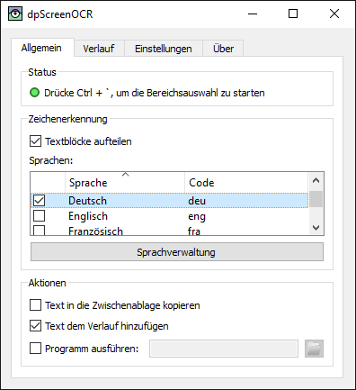

Laden Sie dpScreenOCR-1.5.2-linux-x86_64.tar.xz herunter, das auf den meisten Systemen läuft, oder wählen Sie ein Paket für Ihre Distribution aus:

Direkter Download: Installationsprogramm oder ZIP-Archiv
dpScreenOCR ist ein Programm, mit dem sich Text aus jedem beliebigen Bereich des Bildschirms extrahieren lässt. Es erspart das manuelle Abtippen bei der Arbeit mit gescannten Dokumenten, Screenshots, Videos, Elementen der Benutzeroberfläche und in anderen Situationen, in denen es nicht möglich ist, Text auf herkömmliche Weise zu kopieren.

Funktionen:
Lesen Sie das Handbuch, um Anweisungen zur Installation, Konfiguration und Verwendung des Programms zu erhalten.
Version 1.5.2 (Änderungen, Lizenz) herunterladen:
Leisten Sie einen Beitrag, indem Sie sich an der Übersetzung oder der Entwicklung beteiligen.